बँक वसुली दावा: scan upload पासून approval पर्यंत, टप्प्याटप्प्याने
Live: https://civilsuits.promenix.in · Office: Nirmal Nyay Associates (Demo) · 29 Oct 2026
या PDF मध्ये:
महत्त्वाचे: demo site वर खऱ्या client ची कोणतीही file upload करू नका. सर्व नावे, खाते क्रमांक, रकमा आणि तारखा काल्पनिक आहेत.
Manual — माणसाने करायचे Automatic — system करते AI — Sarvam वाचते, माणूस तपासतो अजून live नाही
ManualAutomaticAI + माणसाची तपासणीअजून live नाही
| Role | Demo मध्ये काय दाखवायचे | |
|---|---|---|
| Admin | admin@demo.civilsuits.test | Dashboard, नवीन case, office settings, audit log |
| Drafter 1 | drafter1@demo.civilsuits.test | Case A (DEMO-2026-0011) — Deepak Demo Drafter |
| Drafter 2 | drafter2@demo.civilsuits.test | Case B (live demo मध्ये नवीन) — Dipti Demo Drafter |
| Approver | approver@demo.civilsuits.test | Approve / Return — Anil Demo Approver |
| Field | field@demo.civilsuits.test | Phone task list — Farhan Demo Field |
Password सर्वांसाठी एकच: तो chat मध्ये दिला आहे, या PDF मध्ये मुद्दाम छापलेला नाही. दोन browser वापरा (एक normal + एक private window): drafter डावीकडे, approver उजवीकडे.
Repo मध्ये docs/demo-kit/. दोन्ही image-only PDF (300 DPI, थोडे तिरके, noise सह), म्हणजे खऱ्या scanner सारखे.
Case A — DEMO-CASE-A-bank-scans.pdf (6 पाने) | Case B — DEMO-CASE-B-bank-scans.pdf (5 पाने) | |
|---|---|---|
| पानं | Sanction letter, loan agreement, deed of guarantee, statement of account, NPA letter, balance confirmation | Sanction letter, loan agreement, deed of hypothecation (vehicle), statement of account, NPA letter |
| कर्जदार | Rohit Demo Joshi | Ganesh Fake Wagh |
| पत्ता | Flat 7, Sample Heights, Test Lane, Kothrud, Pune 411038 | House 21, Synthetic Colony, Hadapsar, Pune 411028 |
| जामीनदार | Swati Test Joshi | — (नाही) |
| बँक / शाखा / IFSC | State Bank of India · Demo Branch, Pune · SBIN0DEMO01 | |
| खाते क्र. | DEMO40217731 | DEMO40388902 |
| Facility | Term Loan | Vehicle Loan |
| Sanction तारीख | 12/03/2023 | 05/08/2022 |
| मंजूर रक्कम | Rs. 6,50,000/- | Rs. 12,40,000/- |
| व्याजदर | 10.75% p.a. | 9.85% p.a. |
| NPA तारीख | 30/06/2025 | 31/03/2025 |
| थकबाकी | Rs. 5,58,812/- as on 30/09/2026 | Rs. 10,45,485/- as on 30/09/2026 |
ही "expected" यादी आहे: step ⑦ मध्ये AI ने काढलेल्या values यांच्याशी जुळवून दाखवा.
| Internal case no. | DEMO-2026-0012 | Bank branch | SBI — Demo Branch, Pune |
| Court | Civil Judge Senior Division, Pune (Demo) | Borrower | Ganesh Fake Wagh |
| Facility | Vehicle Loan | Drafter / Approver | Dipti Demo Drafter / Anil Demo Approver |
Email आणि password टाकून Sign in. Role प्रमाणे menu बदलतो: admin ला "New case, Audit log, Bulk upload, Office settings" दिसतात, drafter/approver ला नाही.
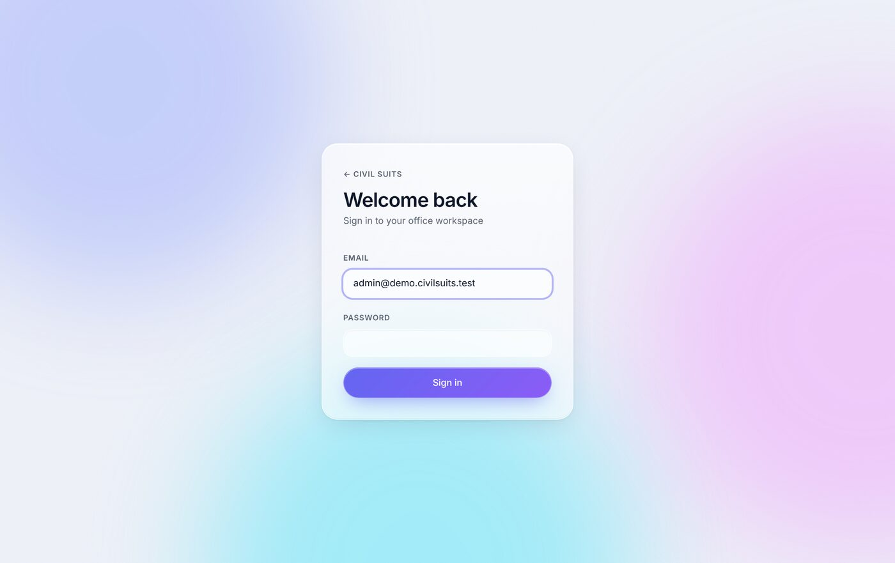
एकूण cases, commercial (12A) cases, approval साठी थांबलेले, आणि "Needs attention" (limitation / 12A / notice deadlines) हे सर्व आपोआप मोजले जाते. वरच्या पट्टीत मराठी दाबून पूर्ण screen मराठीत होते; Ctrl+K ने कोणताही case शोधा.
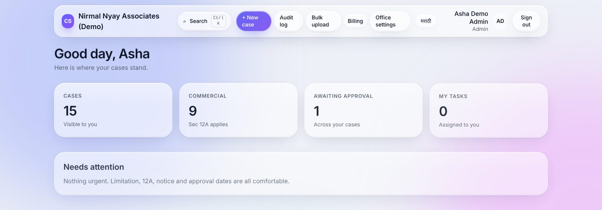
+ New case → case no. (system पुढचा क्रमांक सुचवते), बँक शाखा, court, कर्जदाराचे नाव, facility, पत्ता, drafter आणि approver निवडा → Open case. Loan ची बाकी माहिती scan मधून नंतर येते: इथे टाइप करायची गरज नाही.
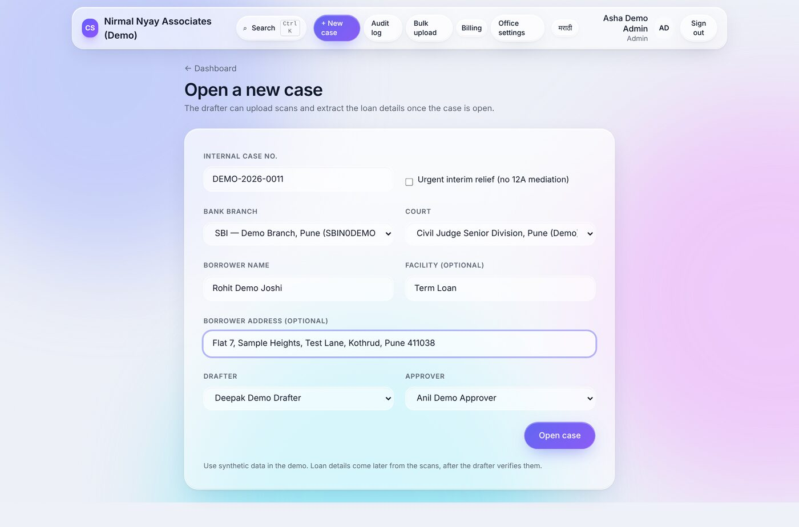
वर case ची status timeline दिसते (Case created → Docs uploaded → Extraction review → … → Filed). Claim आणि loan cards अजून रिकामी आहेत, कारण scan अजून वाचायचा आहे.
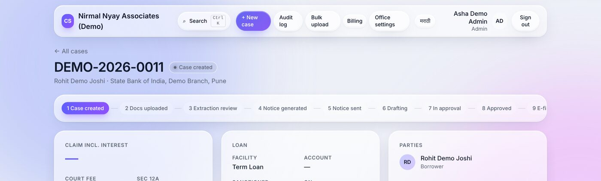
Drafter म्हणून login → case उघडा → Documents मध्ये Choose scan… → DEMO-CASE-A-bank-scans.pdf → Upload. File खाजगी storage मध्ये जाते (link 5 मिनिटांत expire); status आपोआप "Docs uploaded".
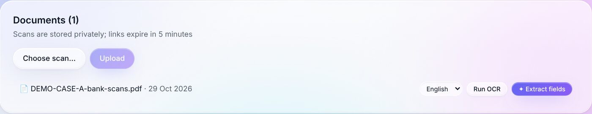
भाषा (English / Marathi) निवडा → Run OCR. Sarvam AI प्रत्येक पान वाचते (≤ 10 पाने प्रति job, साधारण 15–30 सेकंद). झाल्यावर View text (6 pages) दिसते. मग ✦ Extract fields: AI 14 माहिती शोधते आणि प्रत्येकासोबत confidence दाखवते. AI ला फक्त scan चा मजकूर मिळतो, कोणतीही "action" करण्याची परवानगी नाही. मजकूर आणि values encrypted साठवले जातात.
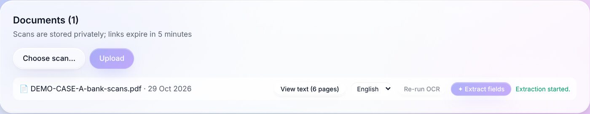
"View text" उघडल्यावर प्रत्येक पानाचा वाचलेला मजकूर दिसतो (खाली: Case A चे sanction letter), आणि "Open original scan" ने मूळ scan.
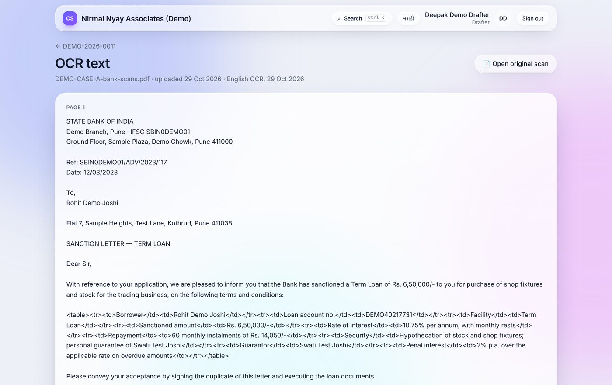
Live उदाहरण (Case A): व्याजदर scan वर "10.75% per annum, with monthly rests" असा होता. Code ने तो "Invalid — not a valid rate" दाखवला. Drafter ने 10.75 असा दुरुस्त करून Verify केला. 14 पैकी बाकी 13 values AI ने 100% confidence ने बरोबर वाचल्या.
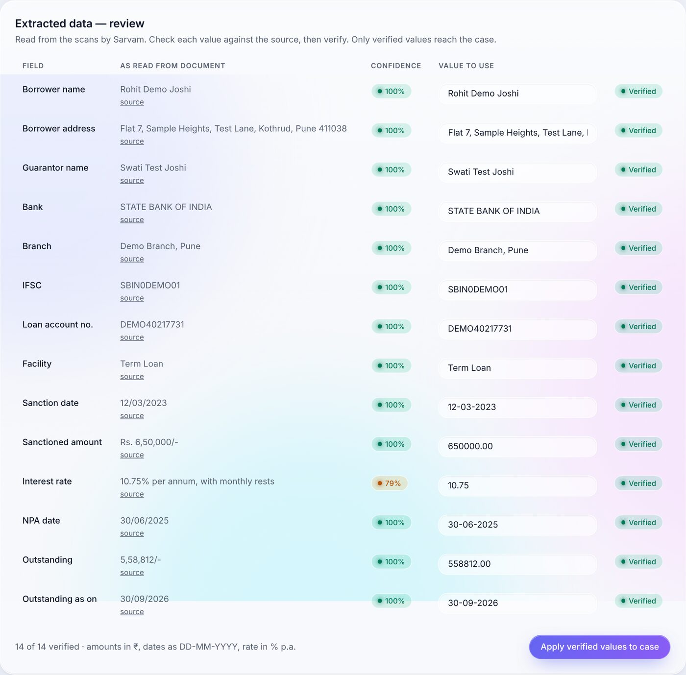
Apply झाल्यावर लगेच: व्याजासह दावा रक्कम, court fee (Maharashtra Court-fees Act slabs), suit type (Summary O.37 / Commercial / DRT ≥ ₹20 लाख), Sec 12A लागू आहे की नाही. हे सर्व tested code मध्ये मोजले जाते, LLM कधीच नाही. खाली Case A (DEMO-2026-0011) शेवटी approve झाल्यानंतर: दावा ₹5,77,812 (A थकबाकी ₹5,58,812 + B ₹11,500 + C ₹7,500), court fee ₹16,030, Summary (O.37), 12A लागू नाही.
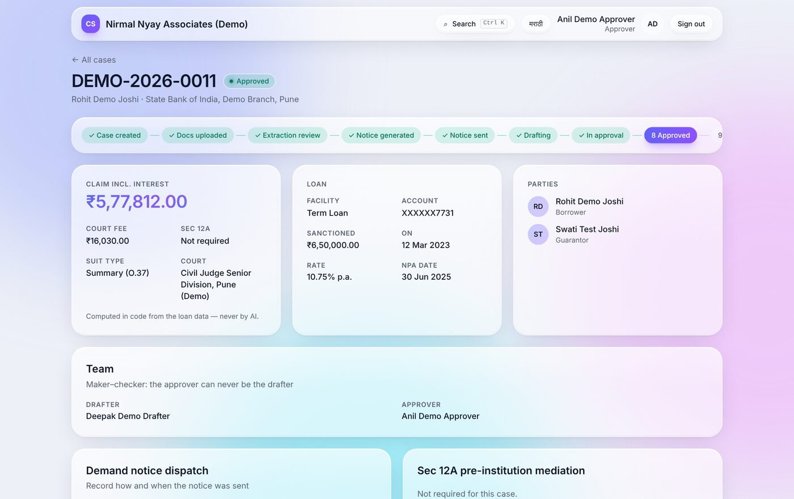
✦ Generate demand notice → office format मधील DOCX तयार. नोटीस पाठवल्यावर mode (RPAD / courier / hand), tracking no., तारीख → Record dispatch → status "Notice sent". Plaint मध्ये ही तारीख आपोआप येते. (Case A: RPAD, RP1234DEMO5IN, 29 Oct 2026)
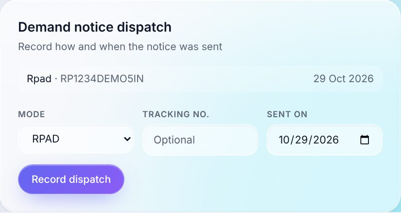
Authority + अर्जाची तारीख नोंदवा → निकाल (settled / failed / non-starter), report date आणि mediator चा report upload → Record outcome. 12A लागू असलेल्या case मध्ये mediation वगळून plaint कडे जाता येत नाही; हा नियम system लागू करते. (उदाहरण: DEMO-2026-0007)
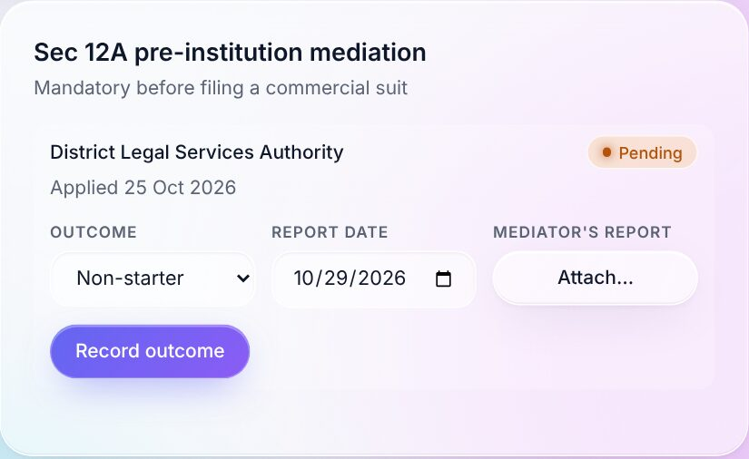
Scan मध्ये सहसा नसलेली माहिती: सही करणारा बँक अधिकारी (नाव, पद, वय), B — penal interest (रिकामे = नंतर ठरवायचे, 0 = NIL), C — खर्च, firm असल्यास "Through its Proprietor…", loan application date, purpose, tenure, executed documents (एका ओळीत एक: Title | DD.MM.YYYY). → Save particulars; रक्कम आणि court fee पुन्हा मोजले जातात. त्यानंतर drafts पुन्हा generate करा.
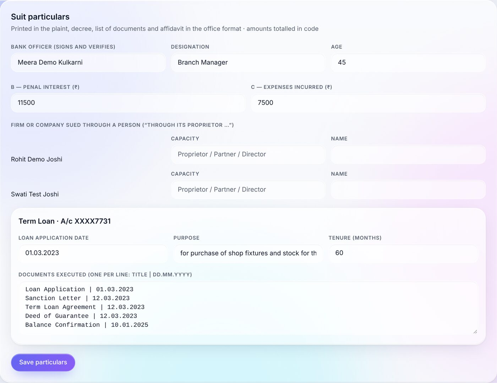
प्रत्येक ✦ Generate … बटण office च्या format मध्ये (caption, परिच्छेदांचा क्रम, Rs. x/- आणि अक्षरी रक्कम, header/footer) DOCX तयार करते: plaint, list of documents, vakalatnama, affidavit / statement of truth, address memo, draft decree (O.37), Bankers' Books certificate, court-fee letter, e-filing data sheet. Preview ने screen वर पाहा, DOCX download करा. नवीन version बनवला की तो पुन्हा "Draft" होतो.
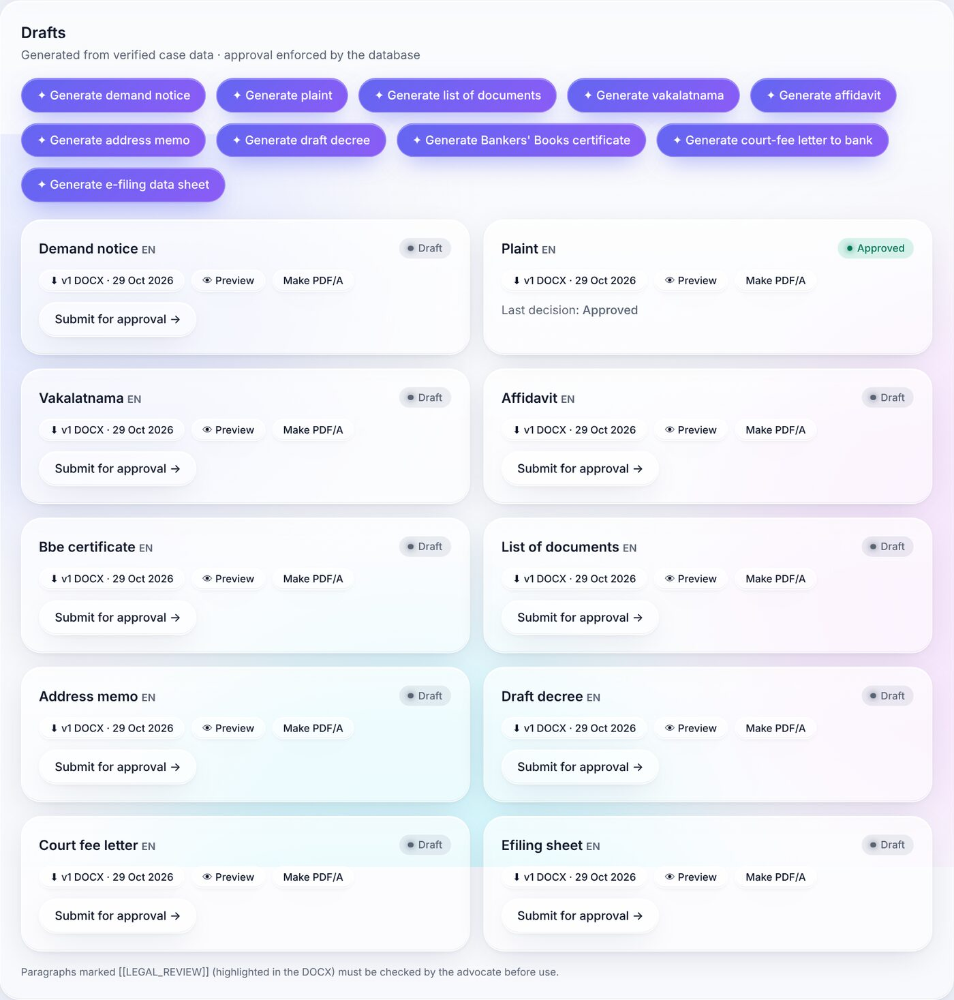
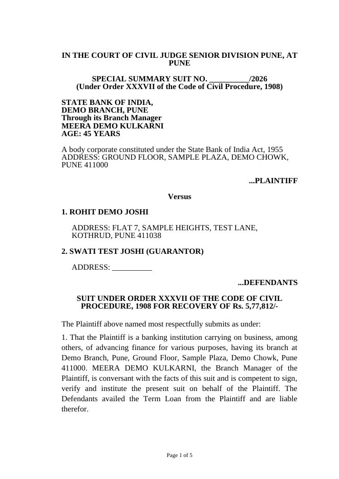
Case A चा live तयार झालेला plaint (पान 1 / 5): court caption, SPECIAL SUMMARY SUIT, Order XXXVII, बँक तर्फे अधिकारी, कर्जदार, जामीनदार, वसुली रक्कम Rs. 5,77,812/-.
[[LEGAL_REVIEW]] असे चिन्हांकित परिच्छेद DOCX मध्ये highlight केलेले असतात. त्यात BBE Act certificate wording, ₹1 लाखाखालील court-fee slabs आणि welfare stamp येतात. System कायद्याचा मजकूर कधीच स्वतः तयार करत नाही.Drafter प्रत्येक draft वर Submit for approval → दाबतो. Approver च्या dashboard वर "Awaiting my approval" मध्ये तो येतो. Approver case उघडून Approve करतो, किंवा comment लिहून Return to drafter. Plaint approve झाला की case "Approved" होतो, return झाला की परत "Drafting". खाली: Anil (approver) च्या queue मध्ये DEMO-2026-0011 चा plaint. त्याने Approve केल्यावर case "Approved" झाला (step 8 चा screenshot).
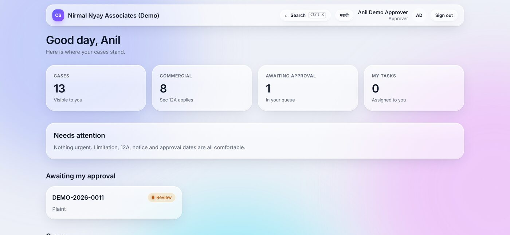
Admin case मधून task देतो (documents गोळा करणे, notary / stamp, e-filing, dispatch). Field staff phone वर Start → note + पावतीचा photo → Mark done. उशीर झालेले tasks लाल दिसतात.
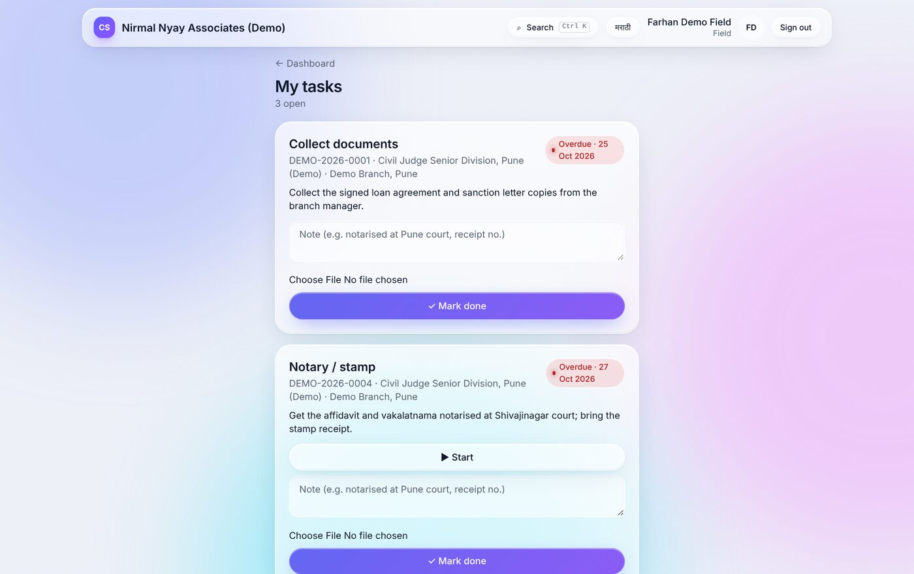
प्रत्येक create / generate / submit / approve ची नोंद कोण, कधी (IST), काय अशी होते. प्रत्येक नोंद आधीच्या नोंदीशी SHA-256 hash ने जोडलेली असते. "Chain integrity — Intact" म्हणजे कोणी नोंद बदललेली नाही. ही नोंद कोणीही बदलू किंवा पुसू शकत नाही.
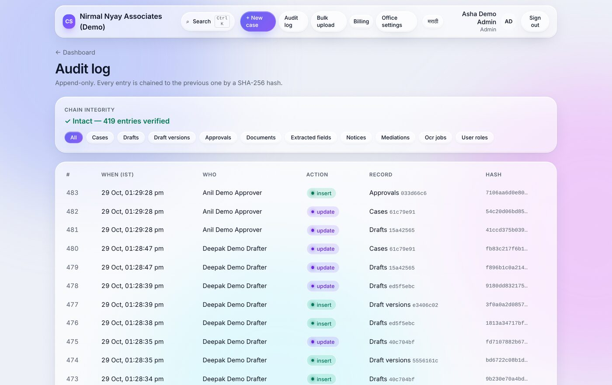
एका PDF मध्ये अनेक कर्ज files (≤ 300 पाने) upload करायच्या, system पाने खाते क्रमांकानुसार वेगळी करते, admin split तपासून confirm करतो, आणि मग cases तयार होतात. E-filing साठी PDF/A bundle (index → plaint → annexures → vakalatnama → affidavit). दोन्हींसाठी document worker server (VPS) लागतो; तो अजून सुरू नाही. Demo मध्ये हे "पुढचा टप्पा" म्हणून सांगा.
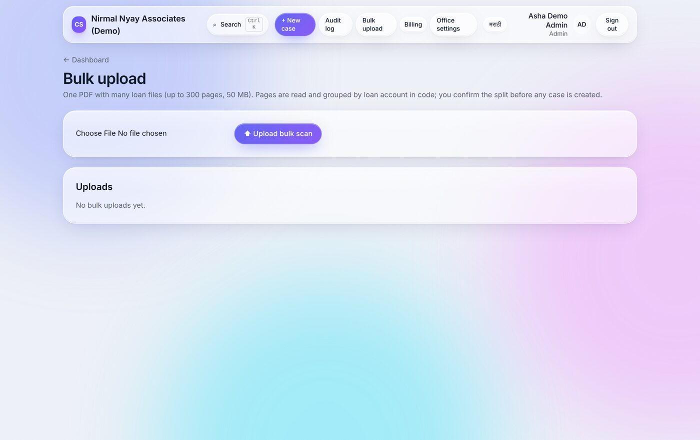
| Automatic (system) | AI (Sarvam) — माणूस तपासतो | Manual (माणूस) |
|---|---|---|
|
|
|
29 Oct ला live चाचणी पूर्ण: Case A (DEMO-2026-0011) वर नवीन case → upload → OCR → extraction → verify / apply → notice → particulars → 10 drafts → approval → "Approved" असा पूर्ण flow civilsuits.promenix.in वर यशस्वी झाला.
DEMO-2026-0012, drafter drafter2 (Dipti). OCR + extraction ला साधारण 1 मिनिट लागतो.Promenix Softech LLP · Civil Suits · हा guide आणि सर्व screenshots synthetic demo data वरून तयार केले आहेत.